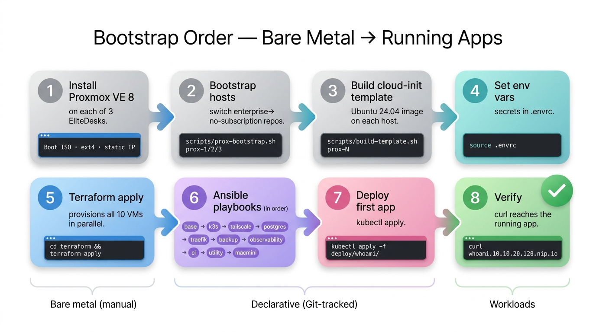

codephilip/homelab) + a PAT for the runner registrationbrew install hashicorp/tap/terraform ansible helm kubectl direnv~/homelab/.envrc| Variable | How to get it |
|---|---|
TF_VAR_proxmox_api_token_prox1/2/3 | On each Proxmox host: pveum user token add terraform@pve provisioner --privsep 0 |
TF_VAR_ssh_public_key | cat ~/.ssh/id_ed25519.pub |
TAILSCALE_AUTHKEY | tailscale.com/admin/settings/keys → reusable + pre-approved |
POSTGRES_APP_PASSWORD | openssl rand -base64 24 |
RESTIC_PASSWORD | openssl rand -base64 32 · save it — required to restore |
GRAFANA_ADMIN_PASSWORD | openssl rand -base64 18 |
LETSENCRYPT_EMAIL | Your real email address |
GITHUB_TOKEN · GITHUB_REPO | GitHub PAT with Admin:write on the repo · owner/repo |
Template lives at .envrc.example. Copy → .envrc, fill in, source ./.envrc (or use direnv).
Run the commands top-to-bottom. Each step is idempotent — safe to re-run if interrupted.
Flash proxmox-ve_8.x.iso to a USB stick, boot each EliteDesk, ext4 filesystem, hostnames prox-1/2/3, static IPs 10.10.20.101/102/103, gateway 10.10.20.1.
# On your Mac, after SSH-key copying to root@prox-1/2/3:
~/homelab/scripts/prox-bootstrap.sh prox-1
~/homelab/scripts/prox-bootstrap.sh prox-2
~/homelab/scripts/prox-bootstrap.sh prox-3~/homelab/scripts/build-template.sh prox-1
~/homelab/scripts/build-template.sh prox-2
~/homelab/scripts/build-template.sh prox-3cd ~/homelab
cp .envrc.example .envrc
# edit .envrc, fill in all secrets
source .envrccd ~/homelab/terraform
terraform init
terraform apply -auto-approve
terraform output ssh_targets # confirms all 10 VMscd ~/homelab/ansible
ansible-galaxy collection install -r requirements.yml
ansible all -m ping # all 10 VMs respond
ansible-playbook base.yml # baseline on every Linux VM
ansible-playbook k3s.yml # 1 cp + 2 workers, fetches kubeconfig
ansible-playbook tailscale.yml # subnet router
ansible-playbook postgres.yml # db1 + k8s ExternalName + Secret
ansible-playbook traefik.yml # ingress + cert-manager + LE issuers
ansible-playbook backup.yml # restic + cron + first snapshot
ansible-playbook observability.yml # Grafana + Prometheus + Loki + node-exporters
ansible-playbook ci.yml # GitHub Actions runner
ansible-playbook utility.yml # AdGuard Home (browser wizard after)
ansible-playbook macmini.yml # Ollama + Python envexport KUBECONFIG=~/homelab/.kube/home.yaml
kubectl apply -f ~/homelab/deploy/whoami/
kubectl -n prod get pods -wcurl http://whoami.10.10.20.120.nip.io
# pod hostname returned → end-to-end workingts-router's 10.10.20.0/24 route, disable key expiryhttp://10.10.20.132:3000 → admin port 8080 → set password10.10.20.132ssh backup1; rclone configterraform/locals.tf → add an entry to local.vms with host/IP/cpu/ram/diskansible/inventory.ymlcd terraform && terraform apply → VM appearsdeploy/<app>/manifest.yaml with Deployment + Service + Ingresspostgres-app Secret (see deploy/README.md)kubectl apply -f deploy/<app>/http://<app>.<worker-ip>.nip.io or your real domainEdit k3s_version in ansible/k3s.yml → run ansible-playbook k3s.yml. The install script no-ops if version matches; if not, it upgrades.
Edit cores / memory / disk in terraform/locals.tf → terraform apply. Some changes (memory) are hot-applied; others (CPU, disk) need a VM reboot.
ssh backup1
. /etc/backup.env
restic snapshots # list snapshots
restic restore latest --target /tmp/restore # pull the latest
gunzip -c /tmp/restore/tmp/pg-*.sql.gz | \
psql -h 10.10.20.111 -U appuser app # restoreGenerate new value, replace in .envrc, source ./.envrc, re-run the relevant playbook (e.g. postgres.yml for DB password). For Proxmox tokens, regenerate on the host first.
| Path | Owns | Touch when… |
|---|---|---|
scripts/prox-bootstrap.sh | Proxmox host repo config + apt | New host, or stale apt |
scripts/build-template.sh | Ubuntu cloud-init template (VM 9000) | New host, or new Ubuntu LTS |
terraform/locals.tf | Single source of truth for IP / sizing plan | Add / resize / move VMs |
terraform/prox-N.tf | VM lifecycle on each host | Rare — uses for_each over locals |
ansible/inventory.yml | Host list + groups for Ansible | New host or new role group |
ansible/base.yml | Common config for every Linux VM | Add shared tools, change TZ, etc. |
ansible/k3s.yml | k3s install / upgrade | Version bumps |
ansible/postgres.yml | Postgres + k8s Service + Secret | DB password rotation, version bump |
ansible/traefik.yml | Ingress + cert-manager + LE issuers | Helm value tweaks, new ClusterIssuer |
ansible/backup.yml | restic repo, backup script, cron | Retention policy changes |
ansible/observability.yml | Grafana + Prom + Loki + node-exporters | New scrape targets, dashboards |
ansible/ci.yml | GitHub Actions self-hosted runner | Switch repos / org-level |
ansible/utility.yml | AdGuard Home | Adding internal hostnames |
ansible/macmini.yml | Mac Mini brew packages + Ollama | New AI tools |
deploy/<app>/ | Per-app k8s manifests | New deployments |
.envrc (gitignored) | All secrets, never committed | Token / password rotation |
.kube/home.yaml (gitignored) | kubectl credentials | Re-fetched by k3s.yml when run |
.envrc or under a gitignored path. There's no Step 4½ on a sticky note somewhere.